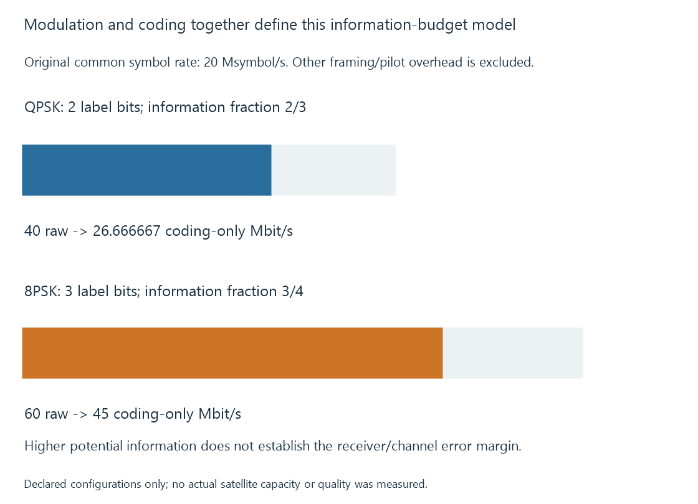

DVB-S2 satellite television
DVB-S2 specifies second-generation satellite framing, modulation and error protection, with the selected configuration determining the required reception and transport relationships.
DVB-S2 defines a second-generation satellite transmission system. Modulation, coding and framing jointly describe how data is carried and protected; the selected combination matters to the receiver.
A programme’s resolution or codec is another part of the service.
Modulation and coding must be read together
DVB-S2 includes specified modulation alternatives and powerful coding arrangements. A modulation/coding combination is often described as a MODCOD.
The symbol alphabet determines how many alternatives can be represented. Coding determines how transmitted work relates to information and protection.
Neither should be treated as a universal useful bitrate on its own.

Two declared configurations
Use a common original twenty-Msymbol/s rate:
| Model configuration | Bits per point label | Declared information fraction | Coding-only ceiling |
|---|---|---|---|
| QPSK, two-thirds | 2 | 2/3 | 26.666667 Mbit/s |
| 8PSK, three-quarters | 3 | 3/4 | 45 Mbit/s |
For the second row, 20 × 3 × 3/4 = 45.
The ceiling excludes framing, pilots and other transport accounting. The configurations are teaching inputs, not a measured transponder or a prediction that a receiver can recover both equally well.
An eight-phase alphabet places phase alternatives closer than a four-phase alphabet under a corresponding constant-radius model. The actual channel and coding determine the usable error margin.
A larger information fraction also allocates a different share of transmitted work to redundancy. More potential information is not automatically more reliable recovery.
Configuration support belongs to the actual frontend
The required delivery system and its selected modulation/coding/input arrangement must be exposed by the hardware and driver/backend route.
A source supporting a subset of DVB-S2 configurations does not thereby support every later extension or profile. The base DVB-S2 and related extension specifications have their own scopes.
A failed acquisition should therefore retain the actual requested parameters rather than only the family name.
Media properties come after recovery
A DVB-S2 service can carry a chosen video/audio representation. The transmission label does not say that every programme is HD, 4K or HEVC.
For Emby, the backend supplies the selected recovered service, then server/client compatibility determines whether it can be copied or needs conversion.